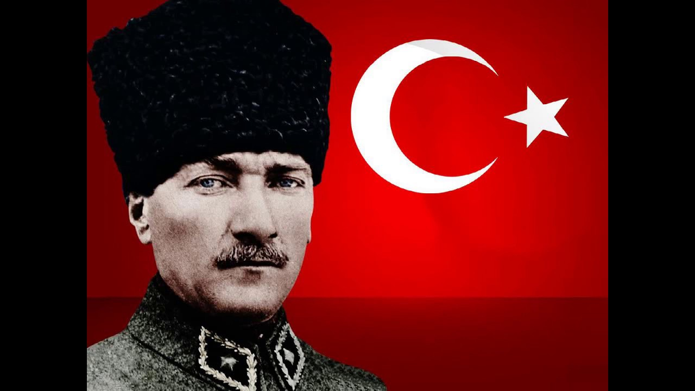

| Görsel boyutlandırma |
- Domanım
- Boyutu belirleyen px deggerine göre ayarla
- Orantıyı korumadan Boyutlandır
- Boyutu, belirlenen px değerine göre ayarlar. En-boy oranı korunamadığı için görselde bozulmalar olabilir.
- Orantıyı koruyarak boyutlandırma
- Boyutu, belirlenen yüzde değerine göre ayarlar. En-boy oranı korunduğu için görselde bozulmalar olmaz. Sayfa boyutlandırmasında görünüm orantılı olarak güncellens
|
| Görsel boyutlandırma |
 |
| Görsel orantısız böyutlandırma |
|
| Görsel orantılı boyutlandırma |
|